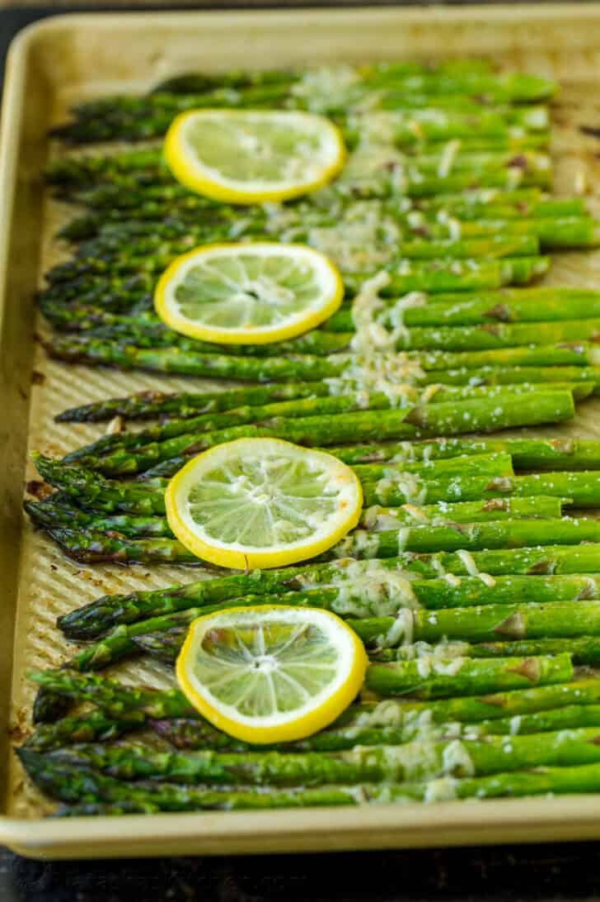

Description
Asparagus is a vibrant and healthy vegetable, roast the spears in lightly seasoned lemon butter with parmesan cheese. It’s simple and it’s the perfect side dish.
Ingredients
- Asparagus – you’ll need 2 bunches (about 2 lbs), with the ends trimmed
- Lemon – we squeeze half of a lemon over the asparagus before baking and slice the other half into rings.
- Unsalted butter – to dot the top of the asparagus spears and it adds rich flavor.
- Olive oil – to drizzle the asparagus and keep it moist.
- Salt & Pepper – these simple seasonings are all you need.
- Parmesan cheese – added at the end of cooking to creating a cheesy crust over the asparagus.
Steps
- Prep – Rinse, pat dry, and trim asparagus.
- Arrange asparagus on a large baking sheet in a single layer. drizzle with olive oil and season with salt and pepper. Roll asparagus lightly to coat.
- Add lemon and butter – Squeeze half a lemon evenly over the asparagus. Arrange lemon slices over the top then place pats of butter over asparagus.
- Bake at 400°F for 10 minutes or until asparagus is tender. Remove asparagus from the oven and set the oven to Broil.
- Sprinkle parmesan over the center of the asparagus and broil for 2-3 minutes or until cheese is melted and golden.